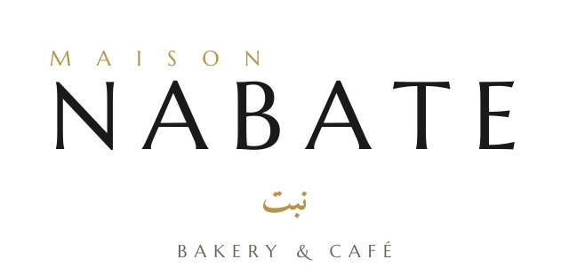
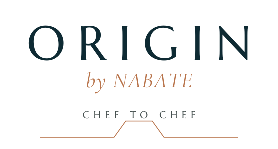
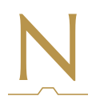
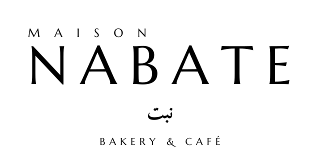

1 · Logos
Deux marques, un seul système








Zone de protectionLaisser autour du logo un espace au moins égal à la hauteur de la lettre « N » de NABATE. Aucun texte ni image dans cette zone.
Tailles minimalesLogo vertical : 90 px de large à l'écran, 25 mm à l'impression. Logo horizontal : 120 px / 30 mm. Épi seul : 24 px (favicon, réseaux).
Choix de la versionFond clair (crème, blanc, photo claire) → version « clair ». Fond vert ou photo sombre → version « foncé ». Gravure, tampon, fax → monochrome. Origin by NABATE s'utilise uniquement dans l'espace professionnel ; NABATE reste la marque signataire partout ailleurs.
À éviterDéformer ou pivoter le logo · changer les couleurs hors charte · ajouter une ombre ou un effet · placer le logo sur une photo chargée sans voile vert · utiliser le drapeau saoudien pour la langue arabe (usage commercial interdit : on utilise la pastille verte « ع »).